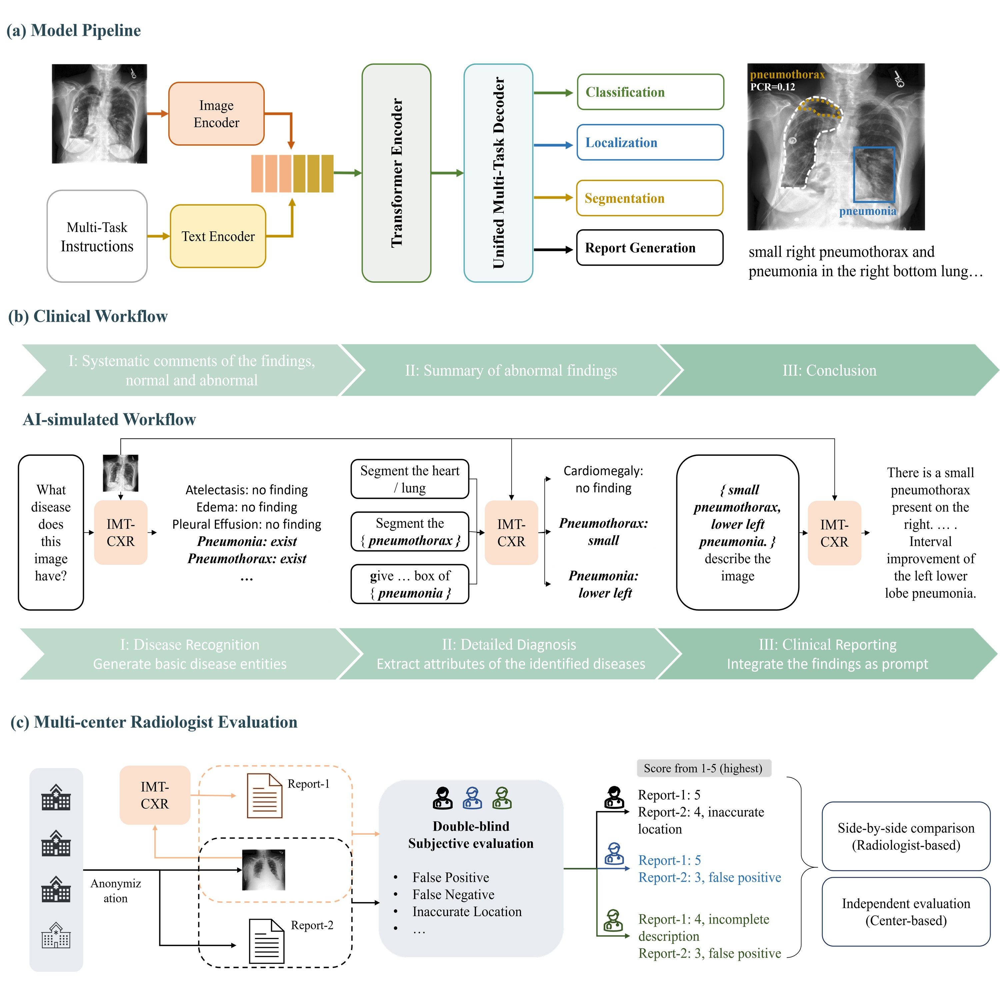
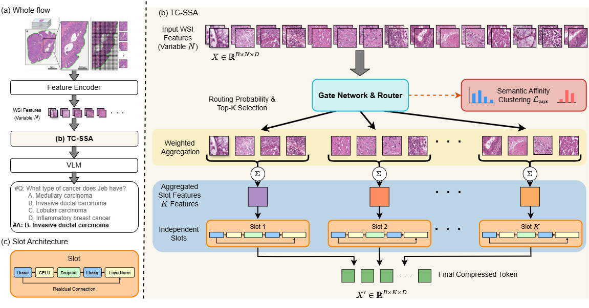

Efficient Multimodal Intelligence
Reducing visual redundancy and computational cost in large multimodal models through token compression, dynamic inference, model distillation, quantization, and efficient architectures.
Associate Professor
Institute of Artificial Intelligence
Shenzhen University of Advanced Technology (SUAT)
I work on multimodal artificial intelligence, efficient visual computing, medical foundation models, and bio-inspired embodied intelligence. My research aims to develop AI systems that are computationally efficient, generalizable, and trustworthy.

Biography and research background
Dr. Lijian Xu is an Associate Professor at the Institute of Artificial Intelligence, Shenzhen University of Advanced Technology (SUAT). He received his Ph.D. through the joint academic program of Shanghai Jiao Tong University and Chiba University, following his M.S. from Shanghai Jiao Tong University and B.S. from Zhejiang University.
He has held research positions at The Chinese University of Hong Kong, Shanghai Artificial Intelligence Laboratory, and SenseTime, gaining experience across academic research and industrial AI development.
His research focuses on efficient multimodal intelligence, medical AI, computer vision, multimodal world models, and bio-inspired embodied intelligence. He is particularly interested in the interplay between data-driven learning, structured knowledge, computational efficiency, and trustworthy reasoning.
He has published over 60 research papers, with work appearing in venues including Med (Cell Press), ICML, Pattern Recognition, IEEE Transactions on Medical Imaging, and MICCAI.
His applied research includes contributions to the Puyi medical multimodal foundation model developed in collaboration with Shanghai AI Laboratory, medical AI infrastructure, and the deployment of AI systems on domestic computing platforms. He has also collaborated with Huawei on migration to Ascend computing platforms and contributed to clinical AI translation through SenseCare.
From efficient multimodal models to intelligent embodied systems
Reducing visual redundancy and computational cost in large multimodal models through token compression, dynamic inference, model distillation, quantization, and efficient architectures.
Developing multimodal medical AI systems for clinical image understanding, computational pathology, medical report generation, and reliable diagnostic reasoning.
Exploring multimodal world models, intelligent agents, physical priors, and bio-inspired approaches for efficient perception, decision-making, and interaction with the physical world.
Improving model robustness and transparency through structured knowledge, open-world recognition, uncertainty estimation, out-of-distribution adaptation, and interpretable reasoning.
Selected research updates
A selection of recent work. For the full publication list, please visit Google Scholar ↗.



Research collaboration across AI, medicine, and intelligent systems
Academic collaboration, student opportunities, and research inquiries
I welcome opportunities for academic and industry collaboration in multimodal AI, medical AI, efficient visual computing, and embodied intelligence.
Email: xulijian@suat-sz.edu.cn
Affiliation:
Institute of Artificial Intelligence,
Shenzhen University of Advanced Technology (SUAT)